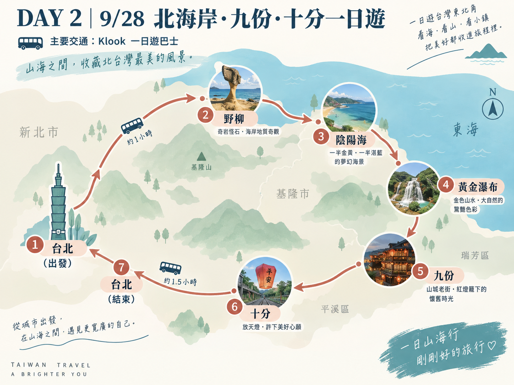
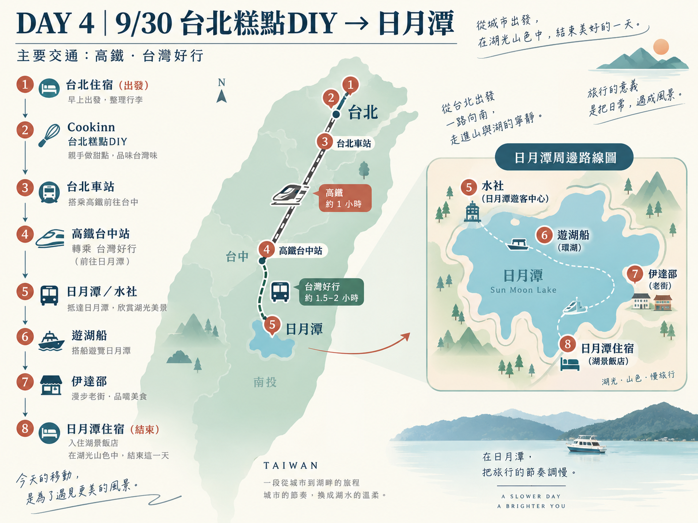
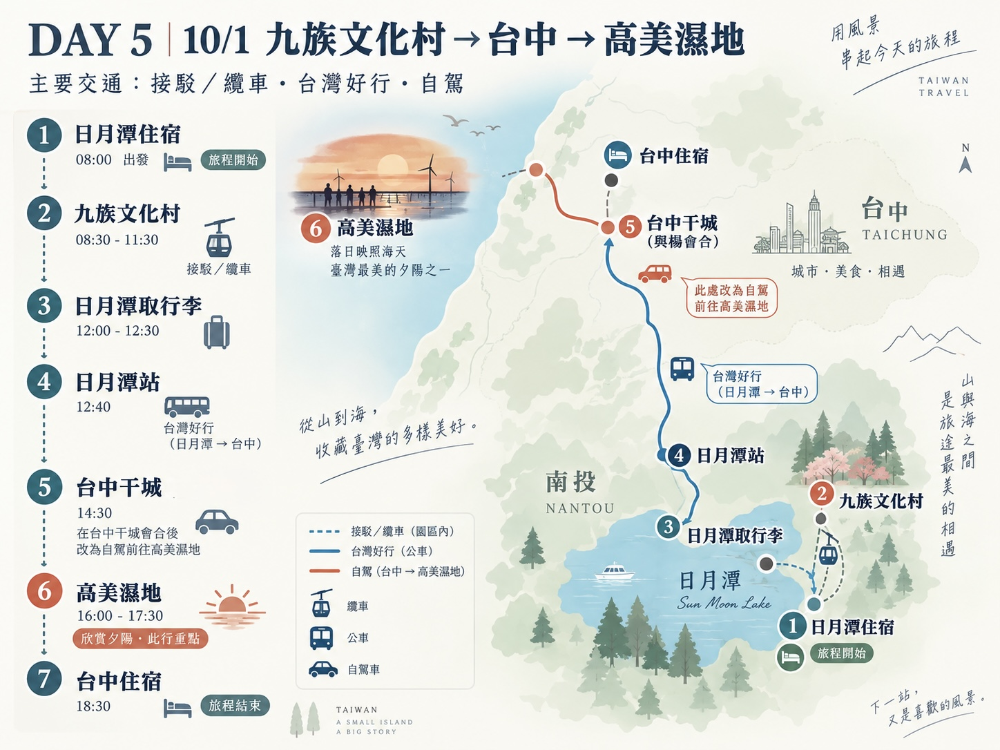
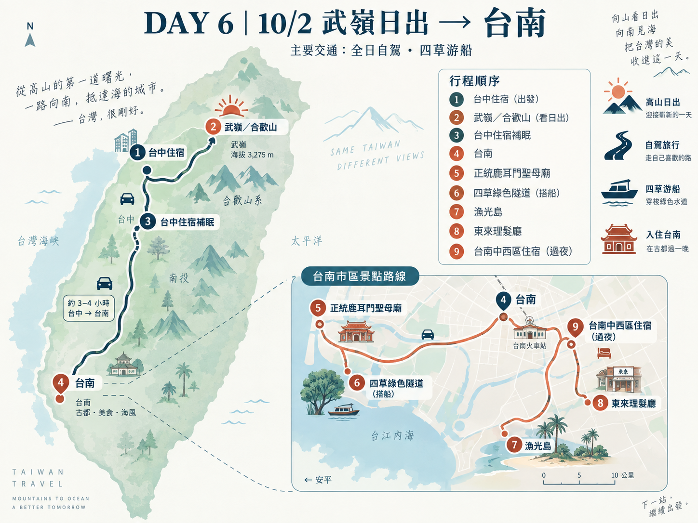
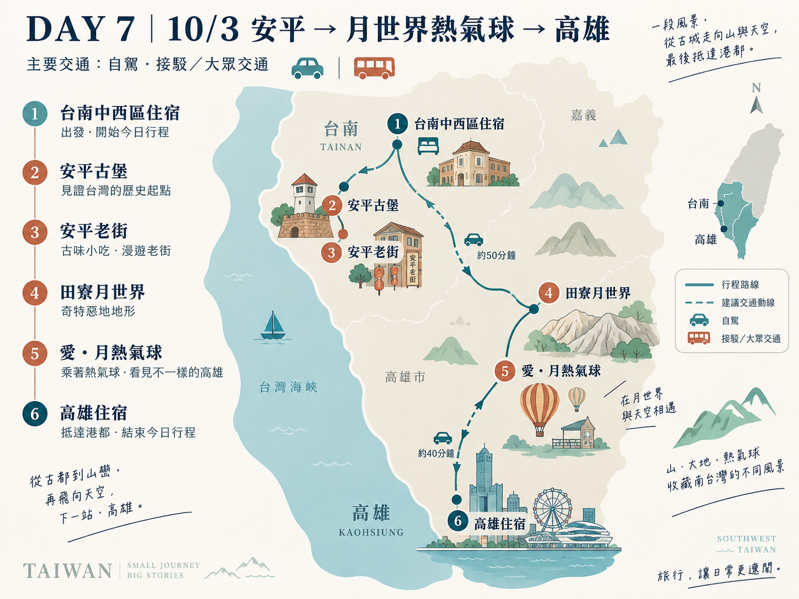
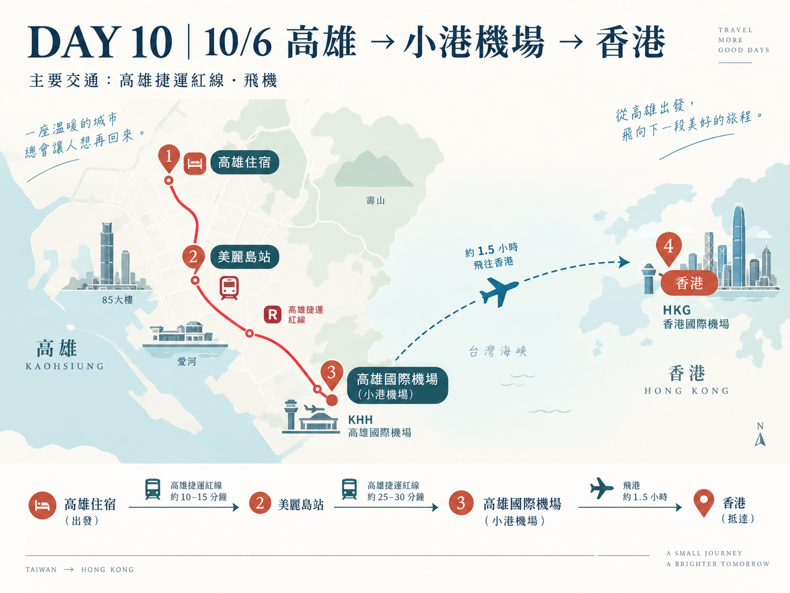

第一天：抵達台灣與台北夜生活
🗺️ 【今日小地圖】（點擊展開/收合，點圖片可放大） 展開 ▼

桃園國際機場 ➔ 台北住宿 ➔ 中山／圓山／西門町／信義區・台北101
※依抵達後精神狀況選1～2個區域
🕒 今日時間軸
- 14:30 抵達桃園國際機場
- 14:30 - 16:00 入境、領行李、交通準備
- 約 16:00 - 17:15 桃園機場 ➔ 台北住宿
- 17:30後 晚餐＋台北夜間自由活動（中山／圓山／西門町／信義區 四選一～二）
📍 景點介紹／推薦理由
⚠️ 【今日特殊備註】（點擊展開） 展開 ▼
・第一天不安排高強度景點。
・中山、圓山、西門町、信義區四選一～二即可。
・若行李較多或多人同行，計程車方便程度比機捷高；若住中山站，機捷至A1後轉計程車最省力。
第一天交通與住宿指南
🚗 車程攻略（點擊可收合） 收合 ▲
方案1｜機場捷運：桃園機場 ➔ A1 台北車站 ➔ 轉捷運／計程車至住宿（約35-40分，票價約NT$160）。
方案2｜計程車：桃園機場直接搭乘計程車前往市中心住宿（約NT$1,200～1,700／車）。
總車程：桃園機場 ➔ 台北市區約 40～75 分鐘。
🏨 推薦住宿區域（點擊展開） 展開 ▼
捷運中山站（首選）：美食、購物機能極佳，機捷至 A1 轉乘方便。
中正紀念堂站／東門站：鄰近永康商圈與文化景點，交通四通八達。
第二天：北海岸・九份・十分一日遊
🗺️ 【今日小地圖】（點擊展開/收合，點圖片可放大） 展開 ▼

台北 ➔ 野柳 ➔ 陰陽海 ➔ 黃金瀑布 ➔ 九份 ➔ 十分 ➔ 台北
※實際順序與停留時間依Klook當日安排為準。
🕒 今日時間軸
- 上午 睡飽、早餐、台北自由活動
- 11:15 Klook 一日遊集合出發 ➔ 北海岸／九份／十分一日遊
- 約 20:30 返回台北車站 ➔ 21:00後 市區自由活動或回住宿
📍 景點介紹／推薦理由
✨ 【今日亮點】（點擊展開） 展開 ▼
北台灣經典山海景色＋九份山城＋十分天燈
⚠️ 【今日特殊備註】（點擊展開） 展開 ▼
・2026/9/28為教師節國定假日，九份與十分人潮可能增加，可考慮與9/29互換。
必吃推薦：九份芋圓、草仔粿。
第二天交通與住宿指南
🚗 車程攻略（點擊可收合） 收合 ▲
白天全程以 Klook 預訂之一日遊專車巴士為主，免去山路轉車煩惱。晚上返回台北車站後使用捷運／計程車移動。
🏨 推薦住宿區域（點擊展開） 展開 ▼
續住台北市區（建議捷運紅線或台北車站附近，方便參加一日遊集合與隔天行程）。
第三天：台北經典文化與百萬夜景
🗺️ 【今日小地圖】（點擊展開/收合，點圖片可放大） 展開 ▼

住宿 ➔ 阜杭豆漿 ➔ 二二八公園 ➔ 總統府外圍 ➔ 中正紀念堂 ➔ 永康商圈 ➔ 故宮 ➔ 士林捷運站集合 ➔ 陽明山夜景
🕒 今日時間軸
- 09:00 住宿出發 ➔ 09:15-10:00 阜杭豆漿
- 10:00-11:30 二二八公園、總統府外圍、中正紀念堂 (看衛兵交接)
- 11:30-13:00 永康商圈午餐 ➔ 14:00-17:00 國立故宮博物院
- 17:30 士林捷運站集合 ➔ 18:00-19:30 陽明山屋頂上夜景 ➔ 下山
📍 景點介紹／推薦理由
✨ 【今日亮點】（點擊展開） 展開 ▼
永康商圈伴手禮與文創小物 ＆ 陽明山台北百萬夜景。
⚠️ 【今日特殊備註】（點擊展開） 展開 ▼
・故宮外籍成人普通票NT$350；國籍優惠折抵票NT$150。
・永康商圈推薦：搖滾牛冰淇淋、鼎泰豐、白水豆花、芒果冰。
第三天交通與住宿指南
🚗 車程攻略（點擊可收合） 收合 ▲
市區移動：台北捷運＋步行。東門 ➔ 故宮：捷運至士林站，轉公車／計程車。士林 ➔ 屋頂上：建議計程車／接送上山。
車程參考：東門至故宮約40-60分；故宮至士林站約15-25分；士林至屋頂上約20-30分。
🏨 推薦住宿區域（點擊展開） 展開 ▼
續住台北市區（捷運沿線即可）。
第四天：手作糕點與日月潭湖景
🗺️ 【今日小地圖】（點擊展開/收合，點圖片可放大） 展開 ▼

台北住宿 ➔ Cookinn ➔ 台北車站 ➔ 高鐵台中站 ➔ 日月潭／水社 ➔ 遊湖船 ➔ 伊達邵 ➔ 日月潭湖景住宿
🕒 今日時間軸
- 09:30-11:30 Cookinn 台灣糕點DIY
- 12:30-13:30 台北高鐵 ➔ 台中高鐵
- 14:10 高鐵台中站搭台灣好行日月潭線
- 15:25-15:30 抵達日月潭／水社，Check-in 自由活動
- 晚間 飯店會合、晚餐、欣賞湖景
📍 景點介紹／推薦理由
✨ 【今日亮點】（點擊展開） 展開 ▼
Cookinn 糕點手作 ＆ 入住日月潭湖景房（日落與清晨湖景）。
⚠️ 【今日特殊備註】（點擊展開） 展開 ▼
・今天抵達日月潭後自由行，晚上到飯店會合；隔天要玩九族，今晚不排夜生活。
必吃推薦：阿薩姆紅茶、茶葉蛋、山豬肉。
第四天交通與住宿指南
🚗 車程攻略（點擊可收合） 收合 ▲
高鐵＋台灣好行【建議】：台北搭高鐵至台中 (約50-70分) ➔ 高鐵台中站 14:10 搭台灣好行 6670 至日月潭 (約1.5小時)。
🏨 推薦住宿區域（點擊展開） 展開 ▼
日月潭水社碼頭附近湖景飯店：方便隔天搭乘纜車前往九族文化村。
第五天：九族文化村與高美濕地夕陽
🗺️ 【今日小地圖】（點擊展開/收合，點圖片可放大） 展開 ▼

日月潭住宿 ➔ 日月潭纜車站 ➔ 九族文化村 ➔ 日月潭 ➔ 住宿取行李 ➔ 日月潭站 ➔ 台中干城 ➔ 轉自駕 ➔ 高美濕地 ➔ 台中住宿
🕒 今日時間軸
- 05:50 日月潭日出 (自由欣賞) ➔ 09:00-14:00 九族文化村
- 14:00 纜車返回日月潭，回住宿取行李
- 14:40 日月潭站搭台灣好行往台中干城
- 16:20 楊於干城會合，轉自駕前往高美濕地
- 17:00-18:30 高美濕地夕陽 ➔ 18:30後 台中燒肉與休息
📍 景點介紹／推薦理由
✨ 【今日亮點】（點擊展開） 展開 ▼
九族原住民族服裝體驗 ＆ 高美濕地夕陽美景。
⚠️ 【今日特殊備註與死線】（點擊展開） 展開 ▼
⚠️ 絕對死線：最晚 14:00 必須離開九族，否則趕不上回台中的客運與高美濕地夕陽！
第五天交通與住宿指南
🚗 車程攻略（點擊可收合） 收合 ▲
日月潭 ⇄ 九族：去程車、回程纜車。日月潭 ➔ 台中：台灣好行 6670。台中 ➔ 高美濕地：自駕（約40-50分）。
🏨 推薦住宿區域（點擊展開） 展開 ▼
星漾商旅中清館：靠近 74 快速道路，隔天 02:30 上武嶺非常方便。
第六天：武嶺高山曙光與府城古都
🗺️ 【今日小地圖】（點擊展開/收合，點圖片可放大） 展開 ▼

台中住宿 ➔ 武嶺／合歡山 ➔ 台中住宿補眠 ➔ 台南 ➔ 正統鹿耳門聖母廟 ➔ 四草綠色隧道 ➔ 漁光島 ➔ 東來理髮廳 ➔ 台南中西區住宿
🕒 今日時間軸
- 02:30 台中住宿出發 ➔ 05:20-06:20 武嶺日出 ➔ 下山
- 09:00-12:00 返回台中住宿補眠、洗澡、退房
- 13:00 台中出發南下台南
- 15:00 正統鹿耳門聖母廟 ➔ 15:30 四草綠色隧道搭船
- 17:00 漁光島夕陽 ➔ 18:30 東來理髮廳洗頭 ➔ 入住台南中西區
📍 景點介紹／推薦理由
✨ 【今日亮點】（點擊展開） 展開 ▼
武嶺高山日出 ＆ 東來理髮廳台式洗頭體驗。
⚠️ 【今日特殊備註與最高強度防護】（點擊展開） 展開 ▼
⚠️ 全程最高強度日：務必完整保留 09:00-12:00 補眠時間，睡眠與安全第一！
・四草綠色隧道15:30前須購票候船（16:00結束營運）。
第六天交通與住宿指南
🚗 車程攻略（點擊可收合） 收合 ▲
全程自駕。台中 ⇄ 武嶺單程約2.5-3小時；台中 ➔ 台南約2小時；台南市區景點間約10-30分鐘。
🏨 推薦住宿區域（點擊展開） 展開 ▼
台南中西區：方便晚上前往品嚐在地小吃與宵夜。
第七天：安平古堡與月世界熱氣球
🗺️ 【今日小地圖】（點擊展開/收合，點圖片可放大） 展開 ▼

台南中西區住宿 ➔ 安平古堡 ➔ 安平老街 ➔ 取行李 ➔ 田寮月世界 ➔ 2026高雄愛・月熱氣球 ➔ 高雄美麗島／六合住宿
🕒 今日時間軸
- 09:00-12:30 安平古堡、安平老街慢慢逛、早餐午餐
- 12:30-14:00 回住宿取行李／彈性休息 ➔ 14:00 台南出發
- 15:30-17:30 2026高雄愛・月熱氣球／月世界
- 19:30後 高雄美麗島站附近住宿 Check-in 與晚餐
📍 景點介紹／推薦理由
✨ 【今日亮點】（點擊展開） 展開 ▼
2026 高雄愛・月熱氣球節。
⚠️ 【今日特殊備註】（點擊展開） 展開 ▼
・熱氣球下午場約16:00-17:30，建議15:00-15:30提早到場。
必吃推薦：安平蝦捲、豆花、蝦餅。
第七天交通與住宿指南
🚗 車程攻略（點擊可收合） 收合 ▲
台南 ➔ 安平 ➔ 月世界自駕（安平至月世界約1-1.5小時）。月世界至高雄市區後續轉大眾交通。
🏨 推薦住宿區域（點擊展開） 展開 ▼
高雄美麗島站／六合夜市附近：紅橘線交會點，10/4寄放行李、10/5續住、10/6直達機場。
第八天：墾丁海岸包車與夜宿海生館
🗺️ 【今日小地圖】（點擊展開/收合，點圖片可放大） 展開 ▼

高雄住宿 ➔ 美麗島站 ➔ 高鐵左營站 ➔ 墾丁快線 ➔ 恆春／墾丁 ➔ 包車遊墾丁 ➔ 國立海洋生物博物館
🕒 今日時間軸
- 09:00 高雄住宿整理行李，大行李寄放飯店櫃檯（僅帶隨身小行李）
- 10:00 高鐵左營站搭墾丁快線南下
- 12:10-15:40 墾丁包車遊覽（後壁湖生魚片午餐、龍磐公園、鵝鑾鼻燈塔等）
- 16:00 國立海洋生物博物館夜宿報到與活動
📍 景點介紹／推薦理由
✨ 【今日亮點】（點擊展開） 展開 ▼
夜宿海生館（與海洋生物共眠的兩天一夜深度體驗）。
⚠️ 【今日特殊備註與死線】（點擊展開） 展開 ▼
⚠️ 海生館 16:00 報到是固定死線：包車景點寧願少一個（選3-4個點），絕不準壓線遲到！
第八天交通與住宿指南
🚗 車程攻略（點擊可收合） 收合 ▲
左營 ➔ 墾丁：台灣好行9189墾丁快線 (10:00 發車，左營至恆春約2小時05分)。墾丁區域：包車約4小時（景點選3-4個）。
🏨 推薦住宿區域（點擊展開） 展開 ▼
國立海洋生物博物館（夜宿海生館專屬容納區）：當晚直接夜宿館內與魚群共眠。
第九天：港都夕陽與旗津渡輪
🗺️ 【今日小地圖】（點擊展開/收合，點圖片可放大） 展開 ▼

海生館 ➔ 海生館轉乘站 ➔ 墾丁快線 ➔ 左營站 ➔ 高雄住宿取行李／再次入住 ➔ 西子灣 ➔ 鼓山渡輪站 ➔ 旗津 ➔ 旗后砲台／燈塔 ➔ 高雄住宿
🕒 今日時間軸
- 11:20-11:30 海生館夜宿活動結束
- 12:01 搭墾丁快線北返 ➔ 13:50 抵達左營站回飯店拿行李再次 Check-in
- 15:00 西子灣賞景 ➔ 16:00 鼓山渡輪站搭船至旗津
- 16:00-18:00 旗津老街、旗后砲台、燈塔欣賞夕陽 ➔ 晚餐
📍 景點介紹／推薦理由
✨ 【今日亮點】（點擊展開） 展開 ▼
西子灣與高雄港夕陽 ＆ 旗鼓渡輪港都體驗。
⚠️ 【今日特殊備註】（點擊展開） 展開 ▼
・海生館11:31班次非常緊，推薦搭12:01班次較保守。
・高雄日落約17:43-17:47，建議17:15前抵達觀景位置。
第九天交通與住宿指南
🚗 車程攻略（點擊可收合） 收合 ▲
海生館 ➔ 高雄：墾丁快線（建議12:01班次）。左營 ➔ 住宿 ➔ 西子灣：高雄捷運紅橘線。鼓山 ➔ 旗津：旗鼓渡輪（刷悠遊卡NT$30）。
🏨 推薦住宿區域（點擊展開） 展開 ▼
高雄美麗島站附近：再次入住同一家飯店，免去換飯店的行李搬運麻煩。
第十天：賦歸香港・完美收尾
🗺️ 【今日小地圖】（點擊展開/收合，點圖片可放大） 展開 ▼

高雄住宿 ➔ 美麗島站 ➔ 高雄捷運紅線・往小港 ➔ 高雄國際機場站 ➔ 高雄國際機場 ➔ 香港
🕒 今日時間軸
- 06:30 起床 ➔ 06:45-07:00 退房離開住宿
- 07:10-07:30 美麗島站 ➔ 高雄國際機場站
- 07:30 抵達高雄國際機場，報到／托運行李／出境
- 10:15 香港快運航班起飛 ➔ 返回香港
✨ 【今日亮點】（點擊展開） 展開 ▼
無正式景點，以輕鬆準時搭機、平安返回香港為完美收尾。
⚠️ 【今日特殊備註】（點擊展開） 展開 ▼
・住宿選美麗島附近的最大優點：最後一天不需轉線，直達機場。
・07:30 抵達機場可預留約 2 小時 45 分鐘，從容不迫。
第十天交通與住宿指南
🚗 車程攻略（點擊可收合） 收合 ▲
美麗島站搭乘高雄捷運紅線往小港方向直達，約15-20分鐘（全程不需轉線）。
🏨 推薦住宿區域（點擊展開） 展開 ▼
行程圓滿結束，準備搭機返回香港！
全程重要提醒與應變指南
🍜 邵奶奶專屬・滿滿台灣在地美食清單
點擊方框即可打勾記錄，跟著行程品嚐各地經典美食！
💰 交通班次與急救包總覽
🚆 高鐵轉乘日月潭
台北搭高鐵至台中 (~1小時) ➔ 轉台灣好行 6670 日月潭線 (~1.5小時)。
🚐 墾丁快線 (9189)
左營高鐵站 2 號出口售票處登記車次，至第 2 月台搭乘直達恆春/墾丁。
🚢 旗鼓渡輪 (鼓山 ➔ 旗津)
全票 NT$30，可直接刷悠遊卡/一卡通，每 5-15 分鐘一班。
✈️ 最終日機場直達
高雄美麗島站搭乘捷運紅線往小港方向，直達高雄國際機場站（約 15-20 分）。